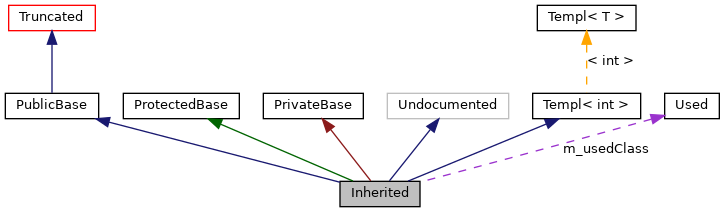

Ta strona wyjaśnia jak interpretować wykresy, które są wygenerowane przez doxygen.
Rozważ następujący przykład:
class Niewidzialna { };
class Okrojona : public Niewidzialna { };
class Nieudokumentowana { };
class PublicznaBaza : public Okrojona { };
template<class T> class Templ { };
class ChronionaBaza { };
class PrywatnaBaza { };
class Uzyta { };
class Dziedziczona : public PublicznaBaza,
protected ChronionaBaza,
private PrywatnaBaza,
public Nieudokumentowana,
public Templ<int>
{
private:
Uzyta *m_usedClass;
};
Rezultat na następującym wykresie:
Prostokąty w powyższym wykresie mają następujące znaczenie:
-
Wypełniony czarny prostokąt reprezentuje strukturę lub klasę dla której został wygenerowany wykres.
-
Prostokąt z czarną obwolutą oznacza udokumentowaną strukturę lub klasę.
-
Prostokąt z szarą obwolutą oznacza nieudokumentowaną strukturę lub klasę.
-
Prostokąt z czerwoną obwolutą oznacza udokumentowaną strukturę lub klasę dla której nie są pokazane wszystkie relacje dziedziczenia/zawierania. Wykres jest okrojony, jeśli nie mieści się w określonych brzegach.
Strzałki mają następujące znaczenie:
-
Ciemno niebieska strzałka jest używana do wizualizacji relacji dziedziczenia publicznego pomiędzy dwiema klasami.
-
Ciemno zielona strzałka jest używana dla dziedziczenia chronionego.
-
Ciemno czerwona strzałka jest używana dla dziedziczenia prywatnego.
-
Fioletowa przerywana strzałka jest używana jeśli klasa jest zawarta lub użyta przez inną klasę. Strzałka jest podpisana zmienną(ymi) przez które wskazywana klasa lub struktura jest dostępna.
 1.9.4
1.9.4